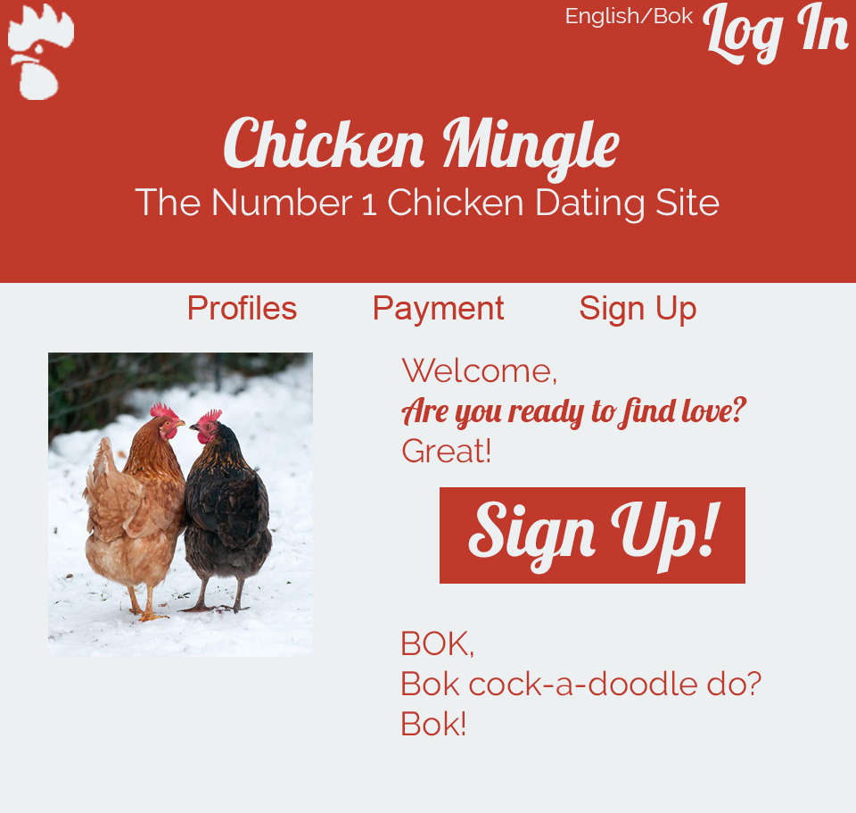

Easy - critiquing the characters
Already explained it to the group my brotha, if you werent there for that, then its your loss
Medium - Feeback for the group
- My perfered method of Communication is through HTML posted to my github
- 1. Too short - I think the presentation could have been longer. I throughly enjoyed the presentation and wish I could have recived more knowlage from your beautiful mouths.
- 2. To small paper cards - I found the small hard to handle and read. I lost my card 30 times before I actually had a chance to actually read it. I think it may be better if the cards were bigger and had a bigger font.
- 3. Thats it - I dont want to give feedback where the group does not need it just for feed back sake! I was going to put a joke here about how the Chicken love website made me uncomfterble, but that would be unessecary so i did not!
Hard - Website Issues and How I fixed them
- 1. Font - The Arial fonts would not work for the target market, as chickens hate Arieal as a font. I changed it to lobster from Google fonts, because chickens love eating freshly cooked lobster, and it looks much nicer and sorta romantic. I also used Raleway to because chickens commonly go along the raleways in order to find safe passage, as well as it looks nice with lobster.
- 2. Colour Scheme - The colour scheme in the original did not work to persuade people to join the website. Thus I changed from the harsh contrasting colours, to red and white, the colours of love to get the chickens into the mood of mating.
- 3. Attention to Sign up buttons - Since the target market is chickens looking for love, I thought that the sign in buttons needs to be larger because chickens are famously have trouble seeing computer screens. Before the sign in buttons were too small for the target market to see clearly.
- 4. Basic Composition - The elements in the header, such as the logo and the title of the website for example. I changed the location of the logo, the titles, sub title, ect, to the top/sides of the header, or prominantly in the middle for the title. This makes it look much cleaner and easier on the eye.
- 5. Better Nav Bar - The nav bar is a very important part of a website and I did not think that the original nav bar really acomplished that goal. Thus I moved it to the middle of the screen to become more promonant.
- 6. New logo - Sadly, though I thought that the logo was excellent, I needed to change it becasue it did not match the professonalism that Chicken Mingle requires.
